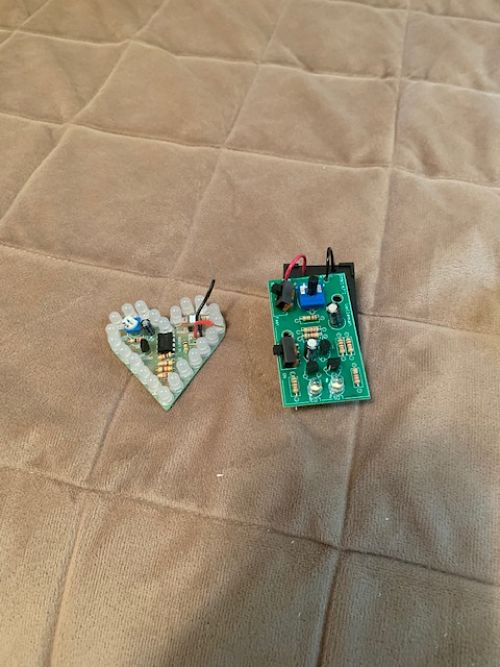

In this rotation, we learned the basics of electronics and how to solder them. There are many different parts that are required for electronic devices to function. Some of the basic ones are capacitors, transistors, resistors, LEDs, diodes, potentiometers, breadboards, multimeters and switches. A capacitor charges and discharges the electric charge stored in it. A transistor amplifies or switches electronic signals and electrical power. A resistor controls the flow of electric current. An LED emits light when a current flows through it. A diode allows an electric current to pass in one direction while blocking the current in the other direction. A potentiometer controls the output of an electrical circuit, such as volume. A breadboard is where all of the electronic devices are linked together. A multimeter is a device that measures voltage, current, and resistance. A switch turns the flow of current on or off.
There are other terms that need to be defined as well before actually making electronics. Voltage, current, and resistance are all different things. Voltage is the charge difference between two points in an electric field, current is the rate at which the charge is flowing, and resistance is the tendency of a given material to resist the flow of charge. AC and DC are two other important terms that refer to different things. AC stands for "Alternating Current" and is an electric current which periodically changes its direction. DC stands for "Direct Current" and is an electric current which always flows in the same direction. AC is commonly used to power things like homes and outlets while DC is commonly used to power smaller appliances and devices.
In order to put electronic parts together to create a functioning device, you have to solder them onto a board. Soldering requires one to use a hot metal rod to melt down a filler metal which attaches the electronic device to the main board. We learned how to properly solder these pieces together to create working products. This is a very enjoyable and relaxing process and I had a good time learning how to solder different electronic parts together.
 Image 1: The top of the soldering projects.